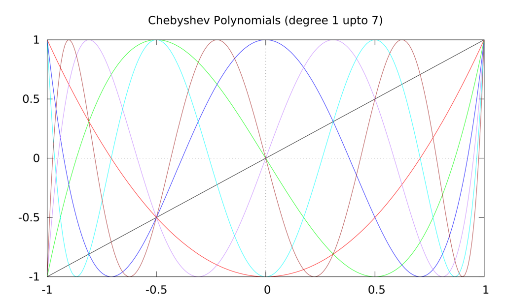
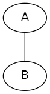
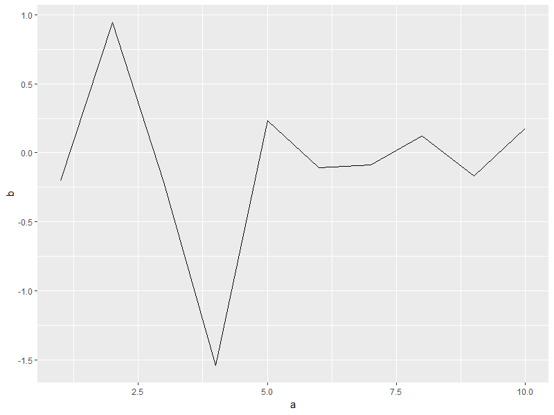

TITLE FIXME
##+OPTIONS: tex:dvipng
| Author: | Mitch Richling |
| Updated: | 2021-05-02 19:33:51 |
| Generated: | 2021-05-02 19:33:52 |
Copyright 2021 Mitch Richling. All rights reserved.
Table of Contents
- 1. Math
- 2. Markup
- 3. Images
- 4. Including external code
- 5. Inline Code
- 6. Code Blocks
- 7. Fancy Code Block Stuff
- 8. dot
- 9. R
- 9.1. Just run some R code in a new session
- 9.2. Access a table in this document as a data.frame
- 9.3. Output from R as a org-mode table
- 9.4. Run some code in a R persistent session (the someData variable is available for later blocks)
- 9.5. Use the someData variable in the session, and draw a graph.
- 9.6. We can use org-mode to make the file too.
- 9.7. And plotly works too
- 10. Reproduciblity
- 11. Publishing
- 12. EOF
1 Math
Here is some math \(5+3^4\).
Reminder: toggle inline preview of an expression with C-c C-x C-l
Here is some display math \[\sum 4\]
2 Markup
2.1 Inline stuff
Some bold text.
Some italics text.
Some underlined text.
Some verbatim text.
Some code text.
Some strike-through text.
2.2 Structural stuff
2.2.1 Special Paragraphs
Here we have a quote:
A human being is a part of a whole, called by us universe, a part limited in time and space. He experiences himself, his thoughts and feelings as something separated from the rest… a kind of optical delusion of his consciousness. This delusion is a kind of prison for us, restricting us to our personal desires and to affection for a few persons nearest to us. Our task must be to free ourselves from this prison by widening our circle of compassion to embrace all living creatures and the whole of nature in its beauty. – Albert Einstein
We can also keep newlines intact in an indented paragraph:
Whales Weep Not!
They say the sea is cold, but the sea contains
the hottest blood of all, and the wildest, the most urgent.
…
– D.H. Lawrence
We can have a "verbatim" section with an "EXAMPLE" block.
Here is some text.
Note that
everything is just as typed.
2.2.2 Tables
2.2.2.1 With formatting
| col 1 | col 2 | col 3 | Col 4 |
|---|---|---|---|
| another | bit | 1 | 2 |
| a | b | 2 | 1 |
2.2.2.2 Tables used to hold data
Notes:
- We have no "top line" on the table – otherwise the row of titles is not recognized!!
- Spaces in column titles are transformed into periods for data.frame column names.
- Empty data cells will be NA in the data.frame
- Non-numeric columns will be "characters" not "factors"
| factor 1 | factor 2 | value 1 | value 2 |
|---|---|---|---|
| a | z | 1 | 5 |
| a | x | 2 | 6 |
| a | y | 3 | 7 |
| b | x | 4 |
2.2.3 Lists
Here is itemized list:
- first
- second
- third
Here is enumerated list:
- First
- Second
- Third
A bit of both:
- First
- Second
- first
- second
- third
- Third
2.3 Todo/action items
2.3.1 TODO:NEW This is a todo
2.3.2 ACTION:DONE This is an action item – work speak. ;)
2.3.3 ACTION:NEW This is an item with sub-items [1/2]
2.3.3.1 ACTION:DONE A subitem
2.3.3.2 ACTION:NEW Another subitem
2.3.4 ACTION:NEW Here is an action item with list compoents [2/3]
[ ]Step 1[X]Step 2[X]Step 3
3 Images
3.1 PDFs in LaTeX and Raster Image in HTML
In this Section you will see one image. A PNG for HTML, and a PDF for LaTeX!
<div class="figure"> <p> <img src="example.png" alt="example.png" /> </p> </div>
3.2 Links to images and converting PDFs to high quality raster images
Here we have a pretty graph (in a PNG file):

The above file was generated from a high quality PDF file: example.pdf. Note that the link in the previous sentence is a link in both HTML and LaTeX because the link has a 'display text' component.
The conversion was done like so:
convert -density 600 -resize 1024 -background white -flatten example.pdf example.png
4 Including external code
Some Ruby code is the file example.rb. It's contents are listed below:
#!/usr/local/bin/ruby ## # @file hello.rb # @author Mitch Richling <http://www.mitchr.me/> # @Copyright Copyright 2006 by Mitch Richling. All rights reserved. # @brief The classic hello world program the Ruby way.@EOL # @Keywords ruby example hello world # @Std Ruby 1.8 # # The methods puts, print, printf & putc are all in the IO # class as well so that they can be used to write to # different IO streams. As used here, they write to # STDOUT. puts("Hello, World!") print("Hello, World!\n") printf("Hello, World!\n") STDOUT << "Hello, World!\n" STDOUT.write("Hello, World!\n") "Hello, World!\n".each_byte {|b| putc(b) }
5 Inline Code
Here is a number, (* 2 3) 6, that comes from a bit of elisp code.
6 Code Blocks
6.1 Text code blocks
Text code blocks can be used as a kind of verbatum environment instead of BEGIN_EXAMPLE.
> Some Mail >> Some More >>> Even More >>>> Even more
6.2 Email code blocks
This is nice because we get some highlighting for quoted e-mails and threads.
> Some Mail >> Some More >>> Even More >>>> Even more
6.3 Emacs Lisp
While you can use "value" insead of "output" for code blocks, it really is very usefull for Emacs Lisp.
(+ 1 2 3 5)
11
6.4 Emacs Calc
For more complex mathematical computations done with just Emacs (no outside tools) we can use calc.
deriv(3*x^2+log(x), x)
6 x + 1 / x
6.5 Maxima
For super complex math, we can use maxima.
Here we see a pretty printed result
programmode:false; d:diff(3*x^2+log(x), x); print(d);
1
6 x + -
x
Same answer, but 2D printed
programmode:false; display2d:false; d:diff(3*x^2+log(x), x); print(d);
6*x+1/x
Lastly note we can also output things in LaTeX, and get them rendered on export!
programmode:false; d:diff(3*x^2+log(x), x); tex(d);
\[6\,x+{{1}\over{x}}\]
Another cool application is ot use the fortran function to have maxima spit out results in fortran syntax.
6.6 Shells
date "+%Y-%m-%d %H:%M:%S"
2020-07-21 16:27:29
6.7 Ruby
puts("HI MOM")
HI MOM
6.8 Perl
print "HI MOM\n";
HI MOM
7 Fancy Code Block Stuff
7.1 Generateing code
(cl-loop for f in '("foo" "bar") do (princ (message "mv %s %s.bak\n" f f)))
mv foo foo.bak mv bar bar.bak
7.2 Code links
You can link to a target inside a code block: Visible Link Text
(cl-loop for f in '("foo" "bar") ;; (foo) do (princ (message "mv %s %s.bak\n" f f)))
You can remove the visable refrences from the source listings with the -r option in the babel header. Otherwise they will appear in the listing – fontlocked white.
7.3 Line Numbers
This will include line numbers in the block when exported
(cl-loop for f in '("foo" "bar") do (princ (message "mv %s %s.bak\n" f f)))
8 dot
Here we do not export the code, just the results – as an image. This results in a nice rendering.
graph {
A -- B;
}

9 R
9.1 Just run some R code in a new session
print("HI MOM")
[1] "HI MOM"
9.2 Access a table in this document as a data.frame
someData
factor.1 factor.2 value.1 value.2 1 a z 1 5 2 a x 2 6 3 a y 3 7 4 b x 4 NA
9.3 Output from R as a org-mode table
someData
| a | z | 1 | 5 |
| a | x | 2 | 6 |
| a | y | 3 | 7 |
| b | x | 4 | nil |
9.4 Run some code in a R persistent session (the someData variable is available for later blocks)
someData <- data.frame(a=1:10, b=rnorm(10))
print(someData)
a b
1 1 1.2417875
2 2 0.8637138
3 3 -1.9440137
4 4 -0.3236072
5 5 -1.3049771
6 6 -1.3039629
7 7 -0.5288673
8 8 0.7139287
9 9 1.1919474
10 10 0.6513476
9.5 Use the someData variable in the session, and draw a graph.
No speical org-mode stuff for graphics. Just saved the output in files via R. Add link text later.
g <- ggplot(someData, aes(x=a, y=b)) + geom_line() ggsave("rOut1.png", width=8, height=6, dpi=100, units='in', plot=g); ggsave("rOut1.pdf", width=8, height=6, dpi=600, units='in', plot=g);
The graph:

A high quality PDF version is here – note the "here" is a link for both LaTeX and HTML.
9.6 We can use org-mode to make the file too.
Note: :session is required for this to work – otherwise we must "print" the graphic.
ggplot(someData, aes(x=a, y=b)) + geom_line()
9.7 And plotly works too
Note the silent output – we don't need the result, so we just don't print it.
library(plotly) library(htmlwidgets) data(diamonds, package = "ggplot2") ggp <- ggplot(diamonds, aes(x = log(carat), y = log(price))) + geom_hex(bins = 100) plp <- ggplotly(ggp) saveWidget(plp, "examplePlotly.html", selfcontained=FALSE, libdir="examplePlotlyLib")
10 Reproduciblity
This section is here to help anyone wishing to reproduce the results above, or to understand the mechanics of how the results were obtained..
Reminder: All blocks in the entire tree can be evaluated with C-C C-V C-S
10.1 FILES
Documented in this section are (for each file in this archive):
- SHA1
- Output from an 'ls -l' command
- Output from the 'wc' command – byte, word, and line counts
The use cases are two fold:
- Insure that the input data files being used are the same
- Check if reproduced results match
Replace the `find ./ -type f` with a list of files and/or wildcards to explicitly select the desired files.
date for c in wc 'openssl sha1' 'ls -l' ; do echo $c; $c `find ./ -type f` done
Wed, Jan 22, 2020 11:08:31 PM
wc
0 1 30 ./.#genericOrgTemplate.org
73 81 1268 ./auto/genericOrgTemplate.el
23 79 3063 ./dotResult.png
186 683 16335 ./example.pdf
1316 7419 347721 ./example.png
26 96 695 ./example.rb
10 10 149 ./files_to_publish
11 11 157 ./files_to_publish_before
1366 5177 54165 ./genericOrgTemplate.html
1371 5185 54236 ./genericOrgTemplate.html~
636 2886 21429 ./genericOrgTemplate.org
615 2736 20681 ./genericOrgTemplate.org~
5312 13987 457794 ./genericOrgTemplate.pdf
623 2019 17088 ./genericOrgTemplate.tex
80 274 4458 ./rOut1.pdf
45 328 7486 ./rOut1.png
21 229 7185 ./rOut2.png
11714 41201 1013940 total
openssl sha1
SHA1(./.#genericOrgTemplate.org)= 62941e0a5896f2b4efe7e63e97b054a866ec3f02
SHA1(./auto/genericOrgTemplate.el)= 1792aa6f454e97af4f40b729b55cba5f175fe622
SHA1(./dotResult.png)= 0aee67ef545690ac2edfacca997a2830bf52e5bd
SHA1(./example.pdf)= 32331c8ba2289b7b3c44b494c738ef0ad9973980
SHA1(./example.png)= d193ac9077e6616ee3d849184453195c414c49c9
SHA1(./example.rb)= ee55cdae5e8017b96fe18ab376356ff6d610ab78
SHA1(./files_to_publish)= f8b013770c45ea8efdf4eeb135e53023f756233d
SHA1(./files_to_publish_before)= f912ac87b274c3575fe7617f4d582abb75118784
SHA1(./genericOrgTemplate.html)= 5f171f9bb3c3b0cca8b45bfe3badb53c1b310c60
SHA1(./genericOrgTemplate.html~)= 1639270987f332dd9419256c9078385257bf3f52
SHA1(./genericOrgTemplate.org)= 98295573751daf0a7f77084b8d3c502fc7cb4f91
SHA1(./genericOrgTemplate.org~)= 7d1a924a6300d622abcf42fcad1660952b7b442e
SHA1(./genericOrgTemplate.pdf)= c1cb58664f48963eccab99496debd518f92a1a5d
SHA1(./genericOrgTemplate.tex)= d4982cfaeb44e15954aff17ac0977b2743c6a4ab
SHA1(./rOut1.pdf)= f165e5c93e05c20ec4264e7418dd620b120e77e5
SHA1(./rOut1.png)= 285f7b2b81e15fd96e4cc1d3fc7f6a0f0042baca
SHA1(./rOut2.png)= d6e8fd09c7a3bbbc7fbd1adab8325243e8d23fad
ls -l
-rw-r--r-- 1 richmit None 30 Jan 22 23:08 ./.#genericOrgTemplate.org
-rw-r--r-- 1 richmit None 1268 May 29 2016 ./auto/genericOrgTemplate.el
-rw-r--r-- 1 richmit None 3063 Jan 22 14:47 ./dotResult.png
-rw-r--r-- 1 richmit None 16335 May 30 2015 ./example.pdf
-rw-r--r-- 1 richmit None 347721 May 30 2015 ./example.png
-rwxr-xr-x 1 richmit None 695 May 30 2015 ./example.rb
-rw-r--r-- 1 richmit None 149 Jan 22 14:47 ./files_to_publish
-rw-r--r-- 1 richmit None 157 Jan 22 14:47 ./files_to_publish_before
-rw-r--r-- 1 richmit None 54165 Jan 22 23:08 ./genericOrgTemplate.html
-rw-r--r-- 1 richmit None 54236 Jan 22 23:05 ./genericOrgTemplate.html~
-rw-r--r-- 1 richmit None 21429 Jan 22 23:08 ./genericOrgTemplate.org
-rw-r--r-- 1 richmit None 20681 Jan 22 14:53 ./genericOrgTemplate.org~
-rw-r--r-- 1 richmit None 457794 May 29 2016 ./genericOrgTemplate.pdf
-rw-r--r-- 1 richmit None 17088 May 29 2016 ./genericOrgTemplate.tex
-rw-r--r-- 1 richmit None 4458 Jan 22 23:07 ./rOut1.pdf
-rw-r--r-- 1 richmit None 7486 Jan 22 23:07 ./rOut1.png
-rw-r--r-- 1 richmit None 7185 Jan 22 23:07 ./rOut2.png
10.2 ENVIRONMENT
The input files are only part of the reproduciblity equation. It is also important to understand the tools and computational environment used for the original analysis. This section contains various bits of meta-data about the tools and system I used for this analysis.
10.2.1 Embedded Ruby Version
puts(RUBY_VERSION)
2.6.3
10.2.2 Embedded Perl Version
print $]
5.030000
10.2.3 Embedded R Information
10.2.3.1 R version
R.version
_
platform x86_64-w64-mingw32
arch x86_64
os mingw32
system x86_64, mingw32
status
major 3
minor 5.3
year 2019
month 03
day 11
svn rev 76217
language R
version.string R version 3.5.3 (2019-03-11)
nickname Great Truth
10.2.3.2 Session Information
sessionInfo()
R version 3.5.3 (2019-03-11) Platform: x86_64-w64-mingw32/x64 (64-bit) Running under: Windows 10 x64 (build 18363) Matrix products: default locale: [1] LC_COLLATE=English_United States.1252 LC_CTYPE=English_United States.1252 LC_MONETARY=English_United States.1252 LC_NUMERIC=C LC_TIME=English_United States.1252 attached base packages: [1] graphics grDevices datasets utils grid stats methods base other attached packages: [1] RevoUtils_11.0.3 RColorBrewer_1.1-2 reshape2_1.4.3 scales_1.0.0 ggplot2_3.1.1 tidyr_0.8.3 dplyr_0.8.0.1 data.table_1.12.2 gridExtra_2.3 [10] jsonlite_1.5 knitr_1.22 lattice_0.20-38 RevoUtilsMath_11.0.0 loaded via a namespace (and not attached): [1] Rcpp_1.0.1 magrittr_1.5 tidyselect_0.2.5 munsell_0.5.0 colorspace_1.4-1 R6_2.3.0 rlang_0.3.4 stringr_1.4.0 plyr_1.8.4 tools_3.5.3 gtable_0.3.0 [12] xfun_0.6 withr_2.1.2 lazyeval_0.2.2 assertthat_0.2.1 tibble_2.1.1 crayon_1.3.4 purrr_0.3.2 glue_1.3.1 stringi_1.4.3 compiler_3.5.3 pillar_1.3.1 [23] pkgconfig_2.0.2
10.2.3.3 Loaded Package Versions
installed.packages()[(loadedNamespaces()),c('Version', 'LibPath')]
Version LibPath
Rcpp "1.0.1" "c:/Users/richmit/Documents/R/win-library/x86_64-w64-mingw32-3.5.3/opkgs"
knitr "1.22" "c:/Users/richmit/Documents/R/win-library/x86_64-w64-mingw32-3.5.3/opkgs"
magrittr "1.5" "c:/Users/richmit/Documents/R/win-library/x86_64-w64-mingw32-3.5.3/opkgs"
grDevices "3.5.3" "C:/Program Files/Microsoft/R Open/R-3.5.3/library"
tidyselect "0.2.5" "c:/Users/richmit/Documents/R/win-library/x86_64-w64-mingw32-3.5.3/opkgs"
munsell "0.5.0" "c:/Users/richmit/Documents/R/win-library/x86_64-w64-mingw32-3.5.3/opkgs"
colorspace "1.4-1" "c:/Users/richmit/Documents/R/win-library/x86_64-w64-mingw32-3.5.3/opkgs"
lattice "0.20-38" "C:/Program Files/Microsoft/R Open/R-3.5.3/library"
R6 "2.3.0" "C:/Program Files/Microsoft/R Open/R-3.5.3/library"
rlang "0.3.4" "c:/Users/richmit/Documents/R/win-library/x86_64-w64-mingw32-3.5.3/opkgs"
RevoUtilsMath "11.0.0" "C:/Program Files/Microsoft/R Open/R-3.5.3/library"
stringr "1.4.0" "c:/Users/richmit/Documents/R/win-library/x86_64-w64-mingw32-3.5.3/opkgs"
plyr "1.8.4" "c:/Users/richmit/Documents/R/win-library/x86_64-w64-mingw32-3.5.3/opkgs"
dplyr "0.8.0.1" "c:/Users/richmit/Documents/R/win-library/x86_64-w64-mingw32-3.5.3/opkgs"
tools "3.5.3" "C:/Program Files/Microsoft/R Open/R-3.5.3/library"
utils "3.5.3" "C:/Program Files/Microsoft/R Open/R-3.5.3/library"
grid "3.5.3" "C:/Program Files/Microsoft/R Open/R-3.5.3/library"
data.table "1.12.2" "c:/Users/richmit/Documents/R/win-library/x86_64-w64-mingw32-3.5.3/opkgs"
gtable "0.3.0" "c:/Users/richmit/Documents/R/win-library/x86_64-w64-mingw32-3.5.3/opkgs"
xfun "0.6" "c:/Users/richmit/Documents/R/win-library/x86_64-w64-mingw32-3.5.3/opkgs"
withr "2.1.2" "c:/Users/richmit/Documents/R/win-library/x86_64-w64-mingw32-3.5.3/opkgs"
datasets "3.5.3" "C:/Program Files/Microsoft/R Open/R-3.5.3/library"
stats "3.5.3" "C:/Program Files/Microsoft/R Open/R-3.5.3/library"
lazyeval "0.2.2" "c:/Users/richmit/Documents/R/win-library/x86_64-w64-mingw32-3.5.3/opkgs"
assertthat "0.2.1" "c:/Users/richmit/Documents/R/win-library/x86_64-w64-mingw32-3.5.3/opkgs"
tibble "2.1.1" "c:/Users/richmit/Documents/R/win-library/x86_64-w64-mingw32-3.5.3/opkgs"
base "3.5.3" "C:/Program Files/Microsoft/R Open/R-3.5.3/library"
crayon "1.3.4" "c:/Users/richmit/Documents/R/win-library/x86_64-w64-mingw32-3.5.3/opkgs"
gridExtra "2.3" "c:/Users/richmit/Documents/R/win-library/x86_64-w64-mingw32-3.5.3/opkgs"
RColorBrewer "1.1-2" "c:/Users/richmit/Documents/R/win-library/x86_64-w64-mingw32-3.5.3/opkgs"
reshape2 "1.4.3" "c:/Users/richmit/Documents/R/win-library/x86_64-w64-mingw32-3.5.3/opkgs"
purrr "0.3.2" "c:/Users/richmit/Documents/R/win-library/x86_64-w64-mingw32-3.5.3/opkgs"
ggplot2 "3.1.1" "c:/Users/richmit/Documents/R/win-library/x86_64-w64-mingw32-3.5.3/opkgs"
tidyr "0.8.3" "c:/Users/richmit/Documents/R/win-library/x86_64-w64-mingw32-3.5.3/opkgs"
graphics "3.5.3" "C:/Program Files/Microsoft/R Open/R-3.5.3/library"
glue "1.3.1" "c:/Users/richmit/Documents/R/win-library/x86_64-w64-mingw32-3.5.3/opkgs"
stringi "1.4.3" "c:/Users/richmit/Documents/R/win-library/x86_64-w64-mingw32-3.5.3/opkgs"
compiler "3.5.3" "C:/Program Files/Microsoft/R Open/R-3.5.3/library"
pillar "1.3.1" "c:/Users/richmit/Documents/R/win-library/x86_64-w64-mingw32-3.5.3/opkgs"
methods "3.5.3" "C:/Program Files/Microsoft/R Open/R-3.5.3/library"
RevoUtils "11.0.3" "C:/Program Files/Microsoft/R Open/R-3.5.3/library"
scales "1.0.0" "c:/Users/richmit/Documents/R/win-library/x86_64-w64-mingw32-3.5.3/opkgs"
jsonlite "1.5" "C:/Program Files/Microsoft/R Open/R-3.5.3/library"
pkgconfig "2.0.2" "c:/Users/richmit/Documents/R/win-library/x86_64-w64-mingw32-3.5.3/opkgs"
10.2.4 Emacs Information
10.2.4.1 Emacs Version
(emacs-version)
"GNU Emacs 26.2 (build 1, x86_64-w64-mingw32) of 2019-06-03"
10.2.4.2 org-mode Version
org-version
"9.1.14"
10.2.4.3 ESS Version
(ess-version)
"ess-version: 18.10.3snapshot [elpa: 20200103.915] (loaded from c:/msys64/home/richmit/.emacs.d/elpa/ess-20200103.915/)"
10.2.4.4 Process Environment
process-environment
("tmp=C:\\Users\\richmit\\AppData\\Local\\Temp" "temp=C:\\Users\\richmit\\AppData\\Local\\Temp" "WINDIR=C:\\WINDOWS" "VISIT_MPIEXEC=C:\\Program Files\\Microsoft MPI\\Bin\\mpiexec.exe" "VISITPLUGININSTPUB=C:\\Program Files\\LLNL\\VisIt 2.13.3" "VISITPLUGININSTPRI=C:\\Users\\richmit\\AppData\\Roaming\\LLNL\\VisIt" "VISITLOC=C:\\Program Files\\LLNL\\VisIt 2.13.3" "VISITARCHHOME=C:\\Program Files\\LLNL\\VisIt 2.13.3" "USERPROFILE=C:\\Users\\richmit" "USERNAME=richmit" "USERDOMAIN_ROAMINGPROFILE=HOFUD" "USERDOMAIN=HOFUD" "USER=richmit" "TMUX_PANE=%7" "TMUX=C:/msys64/home/richmit/tmp/tmux/sockets/0_hofud,441,0" "TMP=C:\\msys64\\tmp" "TEXINPUTS=.;C:\\msys64\\home\\richmit\\core\\texinputs;" "TERM=dumb" "TEMP=C:\\msys64\\tmp" "SYSTEMROOT=C:\\WINDOWS" "SYSTEMDRIVE=C:" "SHLVL=4" "SHELL=C:/msys64/usr/bin/zsh" "SESSIONNAME=Console" "SBCL_HOME=C:\\Program Files\\Steel Bank Common Lisp\\1.4.14\\" "ProgramW6432=C:\\Program Files" "ProgramFiles(x86)=C:\\Program Files (x86)" "ProgramData=C:\\ProgramData" "PWD=C:/msys64/home/richmit" "PUBLIC=C:\\Users\\Public" "PSModulePath=C:\\Program Files\\WindowsPowerShell\\Modules;C:\\WINDOWS\\system32\\WindowsPowerShell\\v1.0\\Modules" "PROGRAMFILES=C:\\Program Files" "PROCESSOR_REVISION=8e0a" "PROCESSOR_LEVEL=6" "PROCESSOR_IDENTIFIER=Intel64 Family 6 Model 142 Stepping 10, GenuineIntel" "PROCESSOR_ARCHITECTURE=AMD64" "PRINTER=Microsoft Print to PDF" "PKG_CONFIG_PATH=C:\\msys64\\mingw64\\lib\\pkgconfig;C:\\msys64\\mingw64\\share\\pkgconfig" "PATHEXT=.COM;.EXE;.BAT;.CMD;.VBS;.VBE;.JS;.JSE;.WSF;.WSH;.MSC" "PATH=.;C:\\msys64\\home\\richmit\\bin;C:\\texlive\\2018\\bin\\win32;C:\\msys64\\mingw64\\bin;C:\\msys64\\mingw32\\bin;C:\\msys64\\usr\\local\\bin;C:\\msys64\\mingw32\\sbin;C:\\msys64\\mingw32\\bin;C:\\msys64\\mingw64\\sbin;C:\\msys64\\mingw64\\bin;C:\\msys64\\usr\\sbin;C:\\msys64\\usr\\bin;C:\\msys64\\usr\\bin;C:\\Windows\\System32;C:\\Windows;C:\\Windows\\System32\\Wbem;C:\\Windows\\System32\\WindowsPowerShell\\v1.0\\" "PAGER=C:/msys64/usr/bin/less" "OneDriveConsumer=C:\\Users\\richmit\\OneDrive" "OneDrive=C:\\Users\\richmit\\OneDrive" "OS=Windows_NT" "ORIGINAL_TMP=C:/Users/richmit/AppData/Local/Temp" "ORIGINAL_TEMP=C:/Users/richmit/AppData/Local/Temp" "ORIGINAL_PATH=C:\\Windows\\System32;C:\\Windows;C:\\Windows\\System32\\Wbem;C:\\Windows\\System32\\WindowsPowerShell\\v1.0\\" "OLDPWD=C:/msys64/home/richmit/world/dotfiles/.emacs.d" "NUMBER_OF_PROCESSORS=8" "MYAPPS=C:/msys64/home/richmit/local" "MSYSTEM_PREFIX=C:/msys64/mingw64" "MSYSTEM_CHOST=x86_64-w64-mingw32" "MSYSTEM_CARCH=x86_64" "MSYSTEM=MINGW64" "MSYSCON=mintty.exe" "MSMPI_BIN=C:\\Program Files\\Microsoft MPI\\Bin\\" "MINGW_PREFIX=C:/msys64/mingw64" "MINGW_PACKAGE_PREFIX=mingw-w64-x86_64" "MINGW_CHOST=x86_64-w64-mingw32" "MANPATH=C:\\msys64\\usr\\share\\man;C:\\msys64\\mingw64\\share\\man;C:\\msys64\\mingw32\\share\\man" "LOGONSERVER=\\\\HOFUD" "LOGNAME=richmit" "LOCALAPPDATA=C:\\Users\\richmit\\AppData\\Local" "LANG=en_US.UTF-8" "INFOPATH=C:\\msys64\\usr\\share\\info;C:\\msys64\\mingw64\\share\\info;C:\\msys64\\mingw32\\share\\info" "IGNOREEOF=10" "HOSTNAME=hofud" "HOMEPATH=\\Users\\richmit" "HOMEDRIVE=C:" "HOME=C:\\msys64\\home\\richmit" "FPS_BROWSER_USER_PROFILE_STRING=Default" "FPS_BROWSER_APP_PROFILE_STRING=Internet Explorer" "EDITOR=C:/msys64/usr/bin/vim" "DriverData=C:\\Windows\\System32\\Drivers\\DriverData" "CommonProgramW6432=C:\\Program Files\\Common Files" "CommonProgramFiles(x86)=C:\\Program Files (x86)\\Common Files" "CONFIG_SITE=C:/msys64/mingw64/etc/config.site" "COMSPEC=C:\\WINDOWS\\system32\\cmd.exe" "COMPUTERNAME=HOFUD" "COMMONPROGRAMFILES=C:\\Program Files\\Common Files" "COMMONAPPDATA=C:\\ProgramData" "BIBINPUTS=.;" "APPDATA=C:\\Users\\richmit\\AppData\\Roaming" "ALLUSERSPROFILE=C:\\ProgramData" "ACLOCAL_PATH=C:\\msys64\\mingw64\\share\\aclocal;C:\\msys64\\usr\\share\\aclocal" "!;=;\\")
10.2.4.5 System Type
system-type
windows-nt
10.2.4.6 System Configuration
system-configuration
"x86_64-w64-mingw32"
10.2.5 System Information
for e in date whoami groups id hostname domainname dnsdomainname 'ifconfig -a' 'uname -a' 'openssl version' locale 'ldconfig -p' 'dpkg-query -l'; do c=`echo $e | awk '{print $1}'`; if hash $c 1>/dev/null 2>/dev/null; then ruby -e 'puts("="*90)' echo $e sh -c "$e" fi done
========================================================================================== date Wed, Jan 22, 2020 11:08:43 PM ========================================================================================== whoami richmit ========================================================================================== groups None Users Performance Log Users INTERACTIVE CONSOLE LOGON Authenticated Users This Organization Local account CurrentSession LOCAL NTLM Authentication Medium Mandatory Level ========================================================================================== id uid=197609(richmit) gid=197121(None) groups=197121(None),545(Users),559(Performance Log Users),4(INTERACTIVE),66049(CONSOLE LOGON),11(Authenticated Users),15(This Organization),113(Local account),4095(CurrentSession),66048(LOCAL),262154(NTLM Authentication),401408(Medium Mandatory Level) ========================================================================================== hostname hofud ========================================================================================== dnsdomainname ========================================================================================== uname -a MINGW64_NT-10.0-18363 hofud 3.0.7-338.x86_64 2019-07-11 10:58 UTC x86_64 Msys ========================================================================================== openssl version OpenSSL 1.1.1c 28 May 2019 ========================================================================================== locale LANG=en_US.UTF-8 LC_CTYPE="en_US.UTF-8" LC_NUMERIC="en_US.UTF-8" LC_TIME="en_US.UTF-8" LC_COLLATE="en_US.UTF-8" LC_MONETARY="en_US.UTF-8" LC_MESSAGES="en_US.UTF-8" LC_ALL=
10.2.6 Command Line Tool Information
for e in gcc g++ gfortran \ wc ls grep sed awk cut sort uniq \ bash ksh tcsh dash csh sh zsh \ vi vim emacs em \ ruby ruby1.8 ruby2 python3 python2 perl \ gnuplot maxima octave M2 gap julia R \ qtiplot ggobi \ povray \ openscad xcircuit \ convert pqiv import display \ gs pdftex pdflatex tex latex dvips \ sbcl clisp ecl ccl \ diff diff3 patch merge \ sqlite3 mysqld \ paraview visit \ grass \ tar gzip bzip2 ; do ruby -e 'puts("="*90)' echo "Tool: $e" if hash $e 1>/dev/null 2>/dev/null; then CPH=`which $e` if [ -n "$CPH" -a -e "$CPH" ] ; then echo $CPH | sed 's/^/ Path: /' ls -ld $CPH | sed 's/^/ ls-l: /' $e --version | sed 's/^/ Ver: /' else echo " Unable to locate (which): $e" fi else echo " Unable to locate (hash): $e" fi done ruby -e 'puts("="*90)'
========================================================================================== Tool: gcc Path: /mingw64/bin/gcc ls-l: -rwxr-xr-x 1 richmit None 2137193 Aug 12 05:14 /mingw64/bin/gcc Ver: gcc.exe (Rev1, Built by MSYS2 project) 9.2.0 Ver: Copyright (C) 2019 Free Software Foundation, Inc. Ver: This is free software; see the source for copying conditions. There is NO Ver: warranty; not even for MERCHANTABILITY or FITNESS FOR A PARTICULAR PURPOSE. Ver: ========================================================================================== Tool: g++ Path: /mingw64/bin/g++ ls-l: -rwxr-xr-x 1 richmit None 2139753 Aug 12 05:14 /mingw64/bin/g++ Ver: g++.exe (Rev1, Built by MSYS2 project) 9.2.0 Ver: Copyright (C) 2019 Free Software Foundation, Inc. Ver: This is free software; see the source for copying conditions. There is NO Ver: warranty; not even for MERCHANTABILITY or FITNESS FOR A PARTICULAR PURPOSE. Ver: ========================================================================================== Tool: gfortran Path: /mingw64/bin/gfortran ls-l: -rwxr-xr-x 1 richmit None 2139753 Aug 12 05:14 /mingw64/bin/gfortran Ver: GNU Fortran (Rev1, Built by MSYS2 project) 9.2.0 Ver: Copyright (C) 2019 Free Software Foundation, Inc. Ver: This is free software; see the source for copying conditions. There is NO Ver: warranty; not even for MERCHANTABILITY or FITNESS FOR A PARTICULAR PURPOSE. Ver: ========================================================================================== Tool: wc Path: /usr/bin/wc ls-l: -rwxr-xr-x 1 richmit None 42594 Apr 25 2019 /usr/bin/wc Ver: wc (GNU coreutils) 8.31 Ver: Copyright (C) 2019 Free Software Foundation, Inc. Ver: License GPLv3+: GNU GPL version 3 or later <https://gnu.org/licenses/gpl.html>. Ver: This is free software: you are free to change and redistribute it. Ver: There is NO WARRANTY, to the extent permitted by law. Ver: Ver: Written by Paul Rubin and David MacKenzie. ========================================================================================== Tool: ls Path: /usr/bin/ls ls-l: -rwxr-xr-x 1 richmit None 139682 Apr 25 2019 /usr/bin/ls Ver: ls (GNU coreutils) 8.31 Ver: Copyright (C) 2019 Free Software Foundation, Inc. Ver: License GPLv3+: GNU GPL version 3 or later <https://gnu.org/licenses/gpl.html>. Ver: This is free software: you are free to change and redistribute it. Ver: There is NO WARRANTY, to the extent permitted by law. Ver: Ver: Written by Richard M. Stallman and David MacKenzie. ========================================================================================== Tool: grep Path: /usr/bin/grep ls-l: -rwxr-xr-x 1 richmit None 210195 Dec 5 2018 /usr/bin/grep Ver: grep (GNU grep) 3.0 Ver: Copyright (C) 2017 Free Software Foundation, Inc. Ver: License GPLv3+: GNU GPL version 3 or later <http://gnu.org/licenses/gpl.html>. Ver: This is free software: you are free to change and redistribute it. Ver: There is NO WARRANTY, to the extent permitted by law. Ver: Ver: Written by Mike Haertel and others, see <http://git.sv.gnu.org/cgit/grep.git/tree/AUTHORS>. ========================================================================================== Tool: sed Path: /usr/bin/sed ls-l: -rwxr-xr-x 1 richmit None 172307 Dec 26 2018 /usr/bin/sed Ver: sed (GNU sed) 4.7 Ver: Copyright (C) 2018 Free Software Foundation, Inc. Ver: License GPLv3+: GNU GPL version 3 or later <https://gnu.org/licenses/gpl.html>. Ver: This is free software: you are free to change and redistribute it. Ver: There is NO WARRANTY, to the extent permitted by law. Ver: Ver: Written by Jay Fenlason, Tom Lord, Ken Pizzini, Ver: Paolo Bonzini, Jim Meyering, and Assaf Gordon. Ver: GNU sed home page: <https://www.gnu.org/software/sed/>. Ver: General help using GNU software: <https://www.gnu.org/gethelp/>. Ver: E-mail bug reports to: <bug-sed@gnu.org>. ========================================================================================== Tool: awk Path: /usr/bin/awk ls-l: -rwxr-xr-x 1 richmit None 626954 Jun 24 2019 /usr/bin/awk Ver: GNU Awk 5.0.1, API: 2.0 (GNU MPFR 4.0.2, GNU MP 6.1.2) Ver: Copyright (C) 1989, 1991-2019 Free Software Foundation. Ver: Ver: This program is free software; you can redistribute it and/or modify Ver: it under the terms of the GNU General Public License as published by Ver: the Free Software Foundation; either version 3 of the License, or Ver: (at your option) any later version. Ver: Ver: This program is distributed in the hope that it will be useful, Ver: but WITHOUT ANY WARRANTY; without even the implied warranty of Ver: MERCHANTABILITY or FITNESS FOR A PARTICULAR PURPOSE. See the Ver: GNU General Public License for more details. Ver: Ver: You should have received a copy of the GNU General Public License Ver: along with this program. If not, see http://www.gnu.org/licenses/. ========================================================================================== Tool: cut Path: /usr/bin/cut ls-l: -rwxr-xr-x 1 richmit None 42378 Apr 25 2019 /usr/bin/cut Ver: cut (GNU coreutils) 8.31 Ver: Copyright (C) 2019 Free Software Foundation, Inc. Ver: License GPLv3+: GNU GPL version 3 or later <https://gnu.org/licenses/gpl.html>. Ver: This is free software: you are free to change and redistribute it. Ver: There is NO WARRANTY, to the extent permitted by law. Ver: Ver: Written by David M. Ihnat, David MacKenzie, and Jim Meyering. ========================================================================================== Tool: sort Path: /usr/bin/sort ls-l: -rwxr-xr-x 1 richmit None 106313 Apr 25 2019 /usr/bin/sort Ver: sort (GNU coreutils) 8.31 Ver: Copyright (C) 2019 Free Software Foundation, Inc. Ver: License GPLv3+: GNU GPL version 3 or later <https://gnu.org/licenses/gpl.html>. Ver: This is free software: you are free to change and redistribute it. Ver: There is NO WARRANTY, to the extent permitted by law. Ver: Ver: Written by Mike Haertel and Paul Eggert. ========================================================================================== Tool: uniq Path: /usr/bin/uniq ls-l: -rwxr-xr-x 1 richmit None 42325 Apr 25 2019 /usr/bin/uniq Ver: uniq (GNU coreutils) 8.31 Ver: Copyright (C) 2019 Free Software Foundation, Inc. Ver: License GPLv3+: GNU GPL version 3 or later <https://gnu.org/licenses/gpl.html>. Ver: This is free software: you are free to change and redistribute it. Ver: There is NO WARRANTY, to the extent permitted by law. Ver: Ver: Written by Richard M. Stallman and David MacKenzie. ========================================================================================== Tool: bash Path: /usr/local/bin/bash ls-l: lrwxrwxrwx 1 richmit None 17 Dec 28 2018 /usr/local/bin/bash -> /usr/bin/bash.exe Ver: GNU bash, version 4.4.23(1)-release (x86_64-pc-msys) Ver: Copyright (C) 2016 Free Software Foundation, Inc. Ver: License GPLv3+: GNU GPL version 3 or later <http://gnu.org/licenses/gpl.html> Ver: Ver: This is free software; you are free to change and redistribute it. Ver: There is NO WARRANTY, to the extent permitted by law. ========================================================================================== Tool: ksh Unable to locate (hash): ksh ========================================================================================== Tool: tcsh Unable to locate (hash): tcsh ========================================================================================== Tool: dash Path: /usr/bin/dash ls-l: -rwxr-xr-x 1 richmit None 104553 Jun 21 2018 /usr/bin/dash ========================================================================================== Tool: csh Unable to locate (hash): csh ========================================================================================== Tool: sh Path: /usr/bin/sh ls-l: -rwxr-xr-x 1 richmit None 1971272 Oct 30 2018 /usr/bin/sh Ver: GNU bash, version 4.4.23(1)-release (x86_64-pc-msys) Ver: Copyright (C) 2016 Free Software Foundation, Inc. Ver: License GPLv3+: GNU GPL version 3 or later <http://gnu.org/licenses/gpl.html> Ver: Ver: This is free software; you are free to change and redistribute it. Ver: There is NO WARRANTY, to the extent permitted by law. ========================================================================================== Tool: vi Unable to locate (hash): vi ========================================================================================== Tool: vim Path: /usr/bin/vim ls-l: -rwxr-xr-x 1 richmit None 2704119 Jul 30 06:28 /usr/bin/vim Ver: VIM - Vi IMproved 8.1 (2018 May 18, compiled Jul 30 2019 11:28:50) Ver: Included patches: 1-1777 Ver: Compiled by <alexpux@gmail.com> Ver: Huge version without GUI. Features included (+) or not (-): Ver: +acl -farsi -mouse_sysmouse -tag_any_white Ver: +arabic +file_in_path +mouse_urxvt -tcl Ver: +autocmd +find_in_path +mouse_xterm +termguicolors Ver: +autochdir +float +multi_byte +terminal Ver: -autoservername +folding +multi_lang +terminfo Ver: -balloon_eval -footer -mzscheme +termresponse Ver: +balloon_eval_term +fork() +netbeans_intg +textobjects Ver: -browse +gettext +num64 +textprop Ver: ++builtin_terms -hangul_input +packages +timers Ver: +byte_offset +iconv +path_extra +title Ver: +channel +insert_expand +perl/dyn -toolbar Ver: +cindent +job +persistent_undo +user_commands Ver: -clientserver +jumplist +postscript +vartabs Ver: +clipboard +keymap +printer +vertsplit Ver: +cmdline_compl +lambda +profile +virtualedit Ver: +cmdline_hist +langmap +python/dyn +visual Ver: +cmdline_info +libcall +python3/dyn +visualextra Ver: +comments +linebreak +quickfix +viminfo Ver: +conceal +lispindent +reltime +vreplace Ver: +cryptv +listcmds +rightleft +wildignore Ver: +cscope +localmap +ruby/dyn +wildmenu Ver: +cursorbind -lua +scrollbind +windows Ver: +cursorshape +menu +signs +writebackup Ver: +dialog_con +mksession +smartindent -X11 Ver: +diff +modify_fname -sound -xfontset Ver: +digraphs +mouse +spell -xim Ver: -dnd -mouseshape +startuptime -xpm Ver: -ebcdic +mouse_dec +statusline -xsmp Ver: +emacs_tags -mouse_gpm -sun_workshop -xterm_clipboard Ver: +eval -mouse_jsbterm +syntax -xterm_save Ver: +ex_extra +mouse_netterm +tag_binary Ver: +extra_search +mouse_sgr -tag_old_static Ver: system vimrc file: "/etc/vimrc" Ver: user vimrc file: "$HOME/.vimrc" Ver: 2nd user vimrc file: "~/.vim/vimrc" Ver: user exrc file: "$HOME/.exrc" Ver: defaults file: "$VIMRUNTIME/defaults.vim" Ver: fall-back for $VIM: "/etc" Ver: f-b for $VIMRUNTIME: "/usr/share/vim/vim81" Ver: Compilation: gcc -c -I. -Iproto -DHAVE_CONFIG_H -I/usr/include/ncursesw -march=x86-64 -mtune=generic -O2 -pipe -U_FORTIFY_SOURCE -D_FORTIFY_SOURCE=1 Ver: Linking: gcc -L. -pipe -fstack-protector-strong -pipe -Wl,--as-needed -o vim.exe -lm -lelf -lncursesw -liconv -lacl -lintl -Wl,--enable-auto-import -Wl,--export-all-symbols -Wl,--enable-auto-image-base -fstack-protector-strong -L/usr/lib/perl5/core_perl/CORE -lperl -lpthread -ldl -lcrypt ========================================================================================== Tool: emacs Path: /home/richmit/bin/emacs ls-l: -rwxr-xr-x 1 richmit None 8175 Dec 28 2018 /home/richmit/bin/emacs Ver: GNU Emacs 26.2 Ver: Copyright (C) 2019 Free Software Foundation, Inc. Ver: GNU Emacs comes with ABSOLUTELY NO WARRANTY. Ver: You may redistribute copies of GNU Emacs Ver: under the terms of the GNU General Public License. Ver: For more information about these matters, see the file named COPYING. ========================================================================================== Tool: em Path: /home/richmit/bin/em ls-l: -rwxr-xr-x 1 richmit None 8175 Dec 28 2018 /home/richmit/bin/em Ver: GNU Emacs 26.2 Ver: Copyright (C) 2019 Free Software Foundation, Inc. Ver: GNU Emacs comes with ABSOLUTELY NO WARRANTY. Ver: You may redistribute copies of GNU Emacs Ver: under the terms of the GNU General Public License. Ver: For more information about these matters, see the file named COPYING. ========================================================================================== Tool: ruby Path: /home/richmit/bin/ruby ls-l: -rwxr-xr-x 1 richmit None 8175 Jan 8 2019 /home/richmit/bin/ruby Ver: ruby 2.6.3p62 (2019-04-16 revision 67580) [x64-mingw32] ========================================================================================== Tool: ruby1.8 Unable to locate (hash): ruby1.8 ========================================================================================== Tool: ruby2 Unable to locate (hash): ruby2 ========================================================================================== Tool: python3 Path: /home/richmit/bin/python3 ls-l: -rwxr-xr-x 1 richmit None 8175 Dec 28 2018 /home/richmit/bin/python3 Ver: Python 3.7.4 ========================================================================================== Tool: python2 Path: /home/richmit/bin/python2 ls-l: -rwxr-xr-x 1 richmit None 8175 Dec 28 2018 /home/richmit/bin/python2 ========================================================================================== Tool: perl Path: /home/richmit/bin/perl ls-l: -rwxr-xr-x 1 richmit None 8175 Dec 28 2018 /home/richmit/bin/perl Ver: Ver: This is perl 5, version 30, subversion 0 (v5.30.0) built for x86_64-msys-thread-multi Ver: Ver: Copyright 1987-2019, Larry Wall Ver: Ver: Perl may be copied only under the terms of either the Artistic License or the Ver: GNU General Public License, which may be found in the Perl 5 source kit. Ver: Ver: Complete documentation for Perl, including FAQ lists, should be found on Ver: this system using "man perl" or "perldoc perl". If you have access to the Ver: Internet, point your browser at http://www.perl.org/, the Perl Home Page. Ver: ========================================================================================== Tool: gnuplot Path: /mingw64/bin/gnuplot ls-l: -rwxr-xr-x 1 richmit None 1942622 Jul 23 2019 /mingw64/bin/gnuplot Ver: gnuplot 5.2 patchlevel 7 ========================================================================================== Tool: maxima Path: /home/richmit/bin/maxima ls-l: -rwxr-xr-x 1 richmit None 8175 Dec 28 2018 /home/richmit/bin/maxima Ver: ERROR: Application not found: maxima ========================================================================================== Tool: octave Unable to locate (hash): octave ========================================================================================== Tool: M2 Unable to locate (hash): M2 ========================================================================================== Tool: gap Unable to locate (hash): gap ========================================================================================== Tool: julia Unable to locate (hash): julia ========================================================================================== Tool: R Unable to locate (hash): R ========================================================================================== Tool: qtiplot Unable to locate (hash): qtiplot ========================================================================================== Tool: ggobi Unable to locate (hash): ggobi ========================================================================================== Tool: povray Unable to locate (hash): povray ========================================================================================== Tool: openscad Unable to locate (hash): openscad ========================================================================================== Tool: xcircuit Unable to locate (hash): xcircuit ========================================================================================== Tool: convert Path: /mingw64/bin/convert ls-l: -rwxr-xr-x 1 richmit None 24367 Jul 12 2019 /mingw64/bin/convert Ver: Version: ImageMagick 7.0.8-53 Q16 x86_64 2019-07-12 https://imagemagick.org Ver: Copyright: © 1999-2019 ImageMagick Studio LLC Ver: License: https://imagemagick.org/script/license.php Ver: Features: Cipher DPC HDRI Modules OpenCL OpenMP(4.5) Ver: Delegates (built-in): bzlib cairo djvu fftw flif fontconfig freetype gslib gvc heic jbig jng jp2 jpeg lcms lqr ltdl lzma openexr pangocairo png ps raqm raw rsvg tiff webp wmf xml zlib ========================================================================================== Tool: pqiv Unable to locate (hash): pqiv ========================================================================================== Tool: import Path: /mingw64/bin/import ls-l: -rwxr-xr-x 1 richmit None 24367 Jul 12 2019 /mingw64/bin/import Ver: Version: ImageMagick 7.0.8-53 Q16 x86_64 2019-07-12 https://imagemagick.org Ver: Copyright: © 1999-2019 ImageMagick Studio LLC Ver: License: https://imagemagick.org/script/license.php Ver: Features: Cipher DPC HDRI Modules OpenCL OpenMP(4.5) Ver: Delegates (built-in): bzlib cairo djvu fftw flif fontconfig freetype gslib gvc heic jbig jng jp2 jpeg lcms lqr ltdl lzma openexr pangocairo png ps raqm raw rsvg tiff webp wmf xml zlib Ver: Usage: import.exe [options ...] [ file ] Ver: Ver: Image Settings: Ver: -adjoin join images into a single multi-image file Ver: -border include window border in the output image Ver: -channel type apply option to select image channels Ver: -colorspace type alternate image colorspace Ver: -comment string annotate image with comment Ver: -compress type type of pixel compression when writing the image Ver: -define format:option Ver: define one or more image format options Ver: -density geometry horizontal and vertical density of the image Ver: -depth value image depth Ver: -descend obtain image by descending window hierarchy Ver: -display server X server to contact Ver: -dispose method layer disposal method Ver: -dither method apply error diffusion to image Ver: -delay value display the next image after pausing Ver: -encipher filename convert plain pixels to cipher pixels Ver: -endian type endianness (MSB or LSB) of the image Ver: -encoding type text encoding type Ver: -filter type use this filter when resizing an image Ver: -format "string" output formatted image characteristics Ver: -frame include window manager frame Ver: -gravity direction which direction to gravitate towards Ver: -identify identify the format and characteristics of the image Ver: -interlace type None, Line, Plane, or Partition Ver: -interpolate method pixel color interpolation method Ver: -label string assign a label to an image Ver: -limit type value Area, Disk, Map, or Memory resource limit Ver: -monitor monitor progress Ver: -page geometry size and location of an image canvas Ver: -pause seconds seconds delay between snapshots Ver: -pointsize value font point size Ver: -quality value JPEG/MIFF/PNG compression level Ver: -quiet suppress all warning messages Ver: -regard-warnings pay attention to warning messages Ver: -repage geometry size and location of an image canvas Ver: -respect-parentheses settings remain in effect until parenthesis boundary Ver: -sampling-factor geometry Ver: horizontal and vertical sampling factor Ver: -scene value image scene number Ver: -screen select image from root window Ver: -seed value seed a new sequence of pseudo-random numbers Ver: -set property value set an image property Ver: -silent operate silently, i.e. don't ring any bells Ver: -snaps value number of screen snapshots Ver: -support factor resize support: > 1.0 is blurry, < 1.0 is sharp Ver: -synchronize synchronize image to storage device Ver: -taint declare the image as modified Ver: -transparent-color color Ver: transparent color Ver: -treedepth value color tree depth Ver: -verbose print detailed information about the image Ver: -virtual-pixel method Ver: Constant, Edge, Mirror, or Tile Ver: -window id select window with this id or name Ver: root selects whole screen Ver: Ver: Image Operators: Ver: -annotate geometry text Ver: annotate the image with text Ver: -colors value preferred number of colors in the image Ver: -crop geometry preferred size and location of the cropped image Ver: -encipher filename convert plain pixels to cipher pixels Ver: -geometry geometry preferred size or location of the image Ver: -help print program options Ver: -monochrome transform image to black and white Ver: -negate replace every pixel with its complementary color Ver: -quantize colorspace reduce colors in this colorspace Ver: -resize geometry resize the image Ver: -rotate degrees apply Paeth rotation to the image Ver: -strip strip image of all profiles and comments Ver: -thumbnail geometry create a thumbnail of the image Ver: -transparent color make this color transparent within the image Ver: -trim trim image edges Ver: -type type image type Ver: Ver: Miscellaneous Options: Ver: -debug events display copious debugging information Ver: -help print program options Ver: -list type print a list of supported option arguments Ver: -log format format of debugging information Ver: -version print version information Ver: Ver: By default, 'file' is written in the MIFF image format. To Ver: specify a particular image format, precede the filename with an image Ver: format name and a colon (i.e. ps:image) or specify the image type as Ver: the filename suffix (i.e. image.ps). Specify 'file' as '-' for Ver: standard input or output. ========================================================================================== Tool: display Path: /mingw64/bin/display ls-l: -rwxr-xr-x 1 richmit None 24367 Jul 12 2019 /mingw64/bin/display Ver: Version: ImageMagick 7.0.8-53 Q16 x86_64 2019-07-12 https://imagemagick.org Ver: Copyright: © 1999-2019 ImageMagick Studio LLC Ver: License: https://imagemagick.org/script/license.php Ver: Features: Cipher DPC HDRI Modules OpenCL OpenMP(4.5) Ver: Delegates (built-in): bzlib cairo djvu fftw flif fontconfig freetype gslib gvc heic jbig jng jp2 jpeg lcms lqr ltdl lzma openexr pangocairo png ps raqm raw rsvg tiff webp wmf xml zlib Ver: Usage: display.exe [options ...] file [ [options ...] file ...] Ver: Ver: Image Settings: Ver: -alpha option on, activate, off, deactivate, set, opaque, copy Ver: transparent, extract, background, or shape Ver: -antialias remove pixel-aliasing Ver: -authenticate password Ver: decipher image with this password Ver: -backdrop display image centered on a backdrop Ver: -channel type apply option to select image channels Ver: -colormap type Shared or Private Ver: -colorspace type alternate image colorspace Ver: -comment string annotate image with comment Ver: -compress type type of pixel compression when writing the image Ver: -define format:option Ver: define one or more image format options Ver: -delay value display the next image after pausing Ver: -density geometry horizontal and vertical density of the image Ver: -depth value image depth Ver: -display server display image to this X server Ver: -dispose method layer disposal method Ver: -dither method apply error diffusion to image Ver: -endian type endianness (MSB or LSB) of the image Ver: -filter type use this filter when resizing an image Ver: -format string output formatted image characteristics Ver: -geometry geometry preferred size and location of the Image window Ver: -gravity type horizontal and vertical backdrop placement Ver: -identify identify the format and characteristics of the image Ver: -immutable displayed image cannot be modified Ver: -interlace type type of image interlacing scheme Ver: -interpolate method pixel color interpolation method Ver: -label string assign a label to an image Ver: -limit type value pixel cache resource limit Ver: -loop iterations loop images then exit Ver: -map type display image using this Standard Colormap Ver: -matte store matte channel if the image has one Ver: -monitor monitor progress Ver: -nostdin do not try to open stdin Ver: -page geometry size and location of an image canvas Ver: -profile filename add, delete, or apply an image profile Ver: -quality value JPEG/MIFF/PNG compression level Ver: -quantize colorspace reduce colors in this colorspace Ver: -quiet suppress all warning messages Ver: -regard-warnings pay attention to warning messages Ver: -remote command execute a command in an remote display process Ver: -repage geometry size and location of an image canvas (operator) Ver: -respect-parentheses settings remain in effect until parenthesis boundary Ver: -sampling-factor geometry Ver: horizontal and vertical sampling factor Ver: -scenes range image scene range Ver: -seed value seed a new sequence of pseudo-random numbers Ver: -set property value set an image property Ver: -size geometry width and height of image Ver: -support factor resize support: > 1.0 is blurry, < 1.0 is sharp Ver: -texture filename name of texture to tile onto the image background Ver: -transparent-color color Ver: transparent color Ver: -treedepth value color tree depth Ver: -update seconds detect when image file is modified and redisplay Ver: -verbose print detailed information about the image Ver: -visual type display image using this visual type Ver: -virtual-pixel method Ver: virtual pixel access method Ver: -window id display image to background of this window Ver: -window-group id exit program when this window id is destroyed Ver: -write filename write image to a file Ver: Ver: Image Operators: Ver: -auto-orient automagically orient image Ver: -border geometry surround image with a border of color Ver: -clip clip along the first path from the 8BIM profile Ver: -clip-path id clip along a named path from the 8BIM profile Ver: -colors value preferred number of colors in the image Ver: -contrast enhance or reduce the image contrast Ver: -crop geometry preferred size and location of the cropped image Ver: -decipher filename convert cipher pixels to plain pixels Ver: -deskew threshold straighten an image Ver: -despeckle reduce the speckles within an image Ver: -edge factor apply a filter to detect edges in the image Ver: -enhance apply a digital filter to enhance a noisy image Ver: -equalize perform histogram equalization to an image Ver: -extract geometry extract area from image Ver: -flip flip image in the vertical direction Ver: -flop flop image in the horizontal direction Ver: -frame geometry surround image with an ornamental border Ver: -fuzz distance colors within this distance are considered equal Ver: -gamma value level of gamma correction Ver: -monochrome transform image to black and white Ver: -negate replace every pixel with its complementary color Ver: -normalize transform image to span the full range of colors Ver: -raise value lighten/darken image edges to create a 3-D effect Ver: -resample geometry change the resolution of an image Ver: -resize geometry resize the image Ver: -roll geometry roll an image vertically or horizontally Ver: -rotate degrees apply Paeth rotation to the image Ver: -sample geometry scale image with pixel sampling Ver: -segment value segment an image Ver: -sharpen geometry sharpen the image Ver: -strip strip image of all profiles and comments Ver: -threshold value threshold the image Ver: -thumbnail geometry create a thumbnail of the image Ver: -trim trim image edges Ver: Ver: Image Sequence Operators: Ver: -coalesce merge a sequence of images Ver: -flatten flatten a sequence of images Ver: Ver: Miscellaneous Options: Ver: -debug events display copious debugging information Ver: -help print program options Ver: -list type print a list of supported option arguments Ver: -log format format of debugging information Ver: -version print version information Ver: Ver: In addition to those listed above, you can specify these standard X Ver: resources as command line options: -background, -bordercolor, Ver: -mattecolor, -borderwidth, -font, -foreground, -iconGeometry, Ver: -iconic, -name, -shared-memory, -usePixmap, or -title. Ver: Ver: By default, the image format of 'file' is determined by its magic Ver: number. To specify a particular image format, precede the filename Ver: with an image format name and a colon (i.e. ps:image) or specify the Ver: image type as the filename suffix (i.e. image.ps). Specify 'file' as Ver: '-' for standard input or output. Ver: Ver: Buttons: Ver: 1 press to map or unmap the Command widget Ver: 2 press and drag to magnify a region of an image Ver: 3 press to load an image from a visual image directory ========================================================================================== Tool: gs Path: /mingw64/bin/gs ls-l: -rwxr-xr-x 1 richmit None 22447 Jun 10 2019 /mingw64/bin/gs Ver: 9.27 ========================================================================================== Tool: pdftex Path: /c/texlive/2018/bin/win32/pdftex ls-l: -rwxr-xr-x 1 richmit None 1536 Dec 28 2018 /c/texlive/2018/bin/win32/pdftex Ver: pdfTeX 3.14159265-2.6-1.40.19 (TeX Live 2018/W32TeX) Ver: kpathsea version 6.3.0 Ver: Copyright 2018 Han The Thanh (pdfTeX) et al. Ver: There is NO warranty. Redistribution of this software is Ver: covered by the terms of both the pdfTeX copyright and Ver: the Lesser GNU General Public License. Ver: For more information about these matters, see the file Ver: named COPYING and the pdfTeX source. Ver: Primary author of pdfTeX: Han The Thanh (pdfTeX) et al. Ver: Compiled with libpng 1.6.34; using libpng 1.6.34 Ver: Compiled with zlib 1.2.11; using zlib 1.2.11 Ver: Compiled with xpdf version 4.00 ========================================================================================== Tool: pdflatex Path: /c/texlive/2018/bin/win32/pdflatex ls-l: -rwxr-xr-x 1 richmit None 1536 Dec 28 2018 /c/texlive/2018/bin/win32/pdflatex Ver: pdfTeX 3.14159265-2.6-1.40.19 (TeX Live 2018/W32TeX) Ver: kpathsea version 6.3.0 Ver: Copyright 2018 Han The Thanh (pdfTeX) et al. Ver: There is NO warranty. Redistribution of this software is Ver: covered by the terms of both the pdfTeX copyright and Ver: the Lesser GNU General Public License. Ver: For more information about these matters, see the file Ver: named COPYING and the pdfTeX source. Ver: Primary author of pdfTeX: Han The Thanh (pdfTeX) et al. Ver: Compiled with libpng 1.6.34; using libpng 1.6.34 Ver: Compiled with zlib 1.2.11; using zlib 1.2.11 Ver: Compiled with xpdf version 4.00 ========================================================================================== Tool: tex Path: /c/texlive/2018/bin/win32/tex ls-l: -rwxr-xr-x 1 richmit None 1536 Dec 28 2018 /c/texlive/2018/bin/win32/tex Ver: TeX 3.14159265 (TeX Live 2018/W32TeX) Ver: kpathsea version 6.3.0 Ver: Copyright 2018 D.E. Knuth. Ver: There is NO warranty. Redistribution of this software is Ver: covered by the terms of both the TeX copyright and Ver: the Lesser GNU General Public License. Ver: For more information about these matters, see the file Ver: named COPYING and the TeX source. Ver: Primary author of TeX: D.E. Knuth. ========================================================================================== Tool: latex Path: /c/texlive/2018/bin/win32/latex ls-l: -rwxr-xr-x 1 richmit None 1536 Dec 28 2018 /c/texlive/2018/bin/win32/latex Ver: pdfTeX 3.14159265-2.6-1.40.19 (TeX Live 2018/W32TeX) Ver: kpathsea version 6.3.0 Ver: Copyright 2018 Han The Thanh (pdfTeX) et al. Ver: There is NO warranty. Redistribution of this software is Ver: covered by the terms of both the pdfTeX copyright and Ver: the Lesser GNU General Public License. Ver: For more information about these matters, see the file Ver: named COPYING and the pdfTeX source. Ver: Primary author of pdfTeX: Han The Thanh (pdfTeX) et al. Ver: Compiled with libpng 1.6.34; using libpng 1.6.34 Ver: Compiled with zlib 1.2.11; using zlib 1.2.11 Ver: Compiled with xpdf version 4.00 ========================================================================================== Tool: dvips Path: /c/texlive/2018/bin/win32/dvips ls-l: -rwxr-xr-x 1 richmit None 161280 Dec 28 2018 /c/texlive/2018/bin/win32/dvips Ver: This is dvips(k) 5.998 Copyright 2018 Radical Eye Software Ver: kpathsea version 6.3.0 Ver: Copyright 2018 Radical Eye Software. Ver: There is NO warranty. You may redistribute this software Ver: under the terms of the GNU General Public License Ver: and the Dvips copyright. Ver: For more information about these matters, see the files Ver: named COPYING and dvips.h. Ver: Primary author of Dvips: T. Rokicki. ========================================================================================== Tool: sbcl Path: /usr/local/bin/sbcl ls-l: lrwxrwxrwx 1 richmit None 55 Dec 28 2018 /usr/local/bin/sbcl -> /c/Program Files/Steel Bank Common Lisp/1.4.14/sbcl.exe Ver: SBCL 1.4.14 ========================================================================================== Tool: clisp Unable to locate (hash): clisp ========================================================================================== Tool: ecl Unable to locate (hash): ecl ========================================================================================== Tool: ccl Unable to locate (hash): ccl ========================================================================================== Tool: diff Path: /usr/bin/diff ls-l: -rwxr-xr-x 1 richmit None 205303 Jan 15 2019 /usr/bin/diff Ver: diff (GNU diffutils) 3.7 Ver: Copyright (C) 2018 Free Software Foundation, Inc. Ver: License GPLv3+: GNU GPL version 3 or later <https://gnu.org/licenses/gpl.html>. Ver: This is free software: you are free to change and redistribute it. Ver: There is NO WARRANTY, to the extent permitted by law. Ver: Ver: Written by Paul Eggert, Mike Haertel, David Hayes, Ver: Richard Stallman, and Len Tower. ========================================================================================== Tool: diff3 Path: /usr/bin/diff3 ls-l: -rwxr-xr-x 1 richmit None 59809 Jan 15 2019 /usr/bin/diff3 Ver: diff3 (GNU diffutils) 3.7 Ver: Copyright (C) 2018 Free Software Foundation, Inc. Ver: License GPLv3+: GNU GPL version 3 or later <https://gnu.org/licenses/gpl.html>. Ver: This is free software: you are free to change and redistribute it. Ver: There is NO WARRANTY, to the extent permitted by law. Ver: Ver: Written by Randy Smith. ========================================================================================== Tool: patch Path: /usr/bin/patch ls-l: -rwxr-xr-x 1 richmit None 174011 Feb 9 2018 /usr/bin/patch Ver: GNU patch 2.7.6 Ver: Copyright (C) 2003, 2009-2012 Free Software Foundation, Inc. Ver: Copyright (C) 1988 Larry Wall Ver: Ver: License GPLv3+: GNU GPL version 3 or later <http://gnu.org/licenses/gpl.html>. Ver: This is free software: you are free to change and redistribute it. Ver: There is NO WARRANTY, to the extent permitted by law. Ver: Ver: Written by Larry Wall and Paul Eggert ========================================================================================== Tool: merge Path: /usr/bin/merge ls-l: -rwxr-xr-x 1 richmit None 118470 Jun 1 2017 /usr/bin/merge Ver: merge (GNU RCS) 5.9.4 Ver: Copyright (C) 2010-2017 Thien-Thi Nguyen Ver: Copyright (C) 1990-1995 Paul Eggert Ver: Copyright (C) 1982,1988,1989 Walter F. Tichy, Purdue CS Ver: License GPLv3+: GNU GPL version 3 or later <http://gnu.org/licenses/gpl.html> Ver: This is free software: you are free to change and redistribute it. Ver: There is NO WARRANTY, to the extent permitted by law. ========================================================================================== Tool: sqlite3 Path: /mingw64/bin/sqlite3 ls-l: -rwxr-xr-x 1 richmit None 2070323 Jul 12 2019 /mingw64/bin/sqlite3 Ver: 3.29.0 2019-07-10 17:32:03 fc82b73eaac8b36950e527f12c4b5dc1e147e6f4ad2217ae43ad82882a88alt1 ========================================================================================== Tool: mysqld Unable to locate (hash): mysqld ========================================================================================== Tool: paraview Unable to locate (hash): paraview ========================================================================================== Tool: visit Unable to locate (hash): visit ========================================================================================== Tool: grass Unable to locate (hash): grass ========================================================================================== Tool: tar Path: /usr/bin/tar ls-l: -rwxr-xr-x 1 richmit None 470130 Feb 28 2019 /usr/bin/tar Ver: tar (GNU tar) 1.32 Ver: Copyright (C) 2019 Free Software Foundation, Inc. Ver: License GPLv3+: GNU GPL version 3 or later <https://gnu.org/licenses/gpl.html>. Ver: This is free software: you are free to change and redistribute it. Ver: There is NO WARRANTY, to the extent permitted by law. Ver: Ver: Written by John Gilmore and Jay Fenlason. ========================================================================================== Tool: gzip Path: /c/texlive/2018/bin/win32/gzip ls-l: -rwxr-xr-x 1 richmit None 154112 Dec 28 2018 /c/texlive/2018/bin/win32/gzip Ver: gzip 1.9 Ver: Copyright (C) 2017 Free Software Foundation, Inc. Ver: Copyright (C) 1993 Jean-loup Gailly. Ver: This is free software. You may redistribute copies of it under the terms of Ver: the GNU General Public License <https://www.gnu.org/licenses/gpl.html>. Ver: There is NO WARRANTY, to the extent permitted by law. Ver: Ver: Written by Jean-loup Gailly. ========================================================================================== Tool: bzip2 Path: /mingw64/bin/bzip2 ls-l: -rwxr-xr-x 1 richmit None 45901 Jul 15 2019 /mingw64/bin/bzip2
11 Publishing
By "publishing" I mean simply copying stuff from the current directory tree to a new location – usually one shared by a web/file server or to a staging area to be later uploaded to a web server.
To control very precicely what gets published, put the files in the file files_to_publish. One way to do that is like so:
EXT2PUB='.org .html .png .gif .jpeg .pdf .ps .sh .rb .R .c .cpp .h .hpp .csv .csv.gz' if test -e files_to_publish; then cp files_to_publish files_to_publish_before; wc -l files_to_publish_before; fi for e in $EXT2PUB; do find ./ -name "*$e" done | sed 's/^\.\///' | egrep -v '^(#|\.)' > files_to_publish sort files_to_publish | uniq > files_to_publish~ mv files_to_publish~ files_to_publish wc -l files_to_publish
11 files_to_publish_before 10 files_to_publish
PUB_DIR=/tmp/foo HTML_NAME= PUB_MODES=a+rX VERBOSE=-ii if test -z "$HTML_NAME" -o 0 -eq `find ./ -cnewer "$HTML_NAME" -a -type f 2>/dev/null | wc -l `; then RSYNC_OPTS='--delete -a' if test -n "$VERBOSE"; then RSYNC_OPTS="$RSYNC_OPTS $VERBOSE"; fi if test -e '.rsync-filter'; then RSYNC_OPTS="$RSYNC_OPTS -F"; fi if test -e 'files_to_publish'; then RSYNC_OPTS="$RSYNC_OPTS --files-from=files_to_publish"; fi date rsync $RSYNC_OPTS ./ "$PUB_DIR" date else echo "ERROR: $HTML_NAME is not the newest file here. Please regenerate it (C-c C-e h h)!" fi
ERROR: genericOrgTemplate.html is not the newest file here. Please regenerate it (C-c C-e h h)!